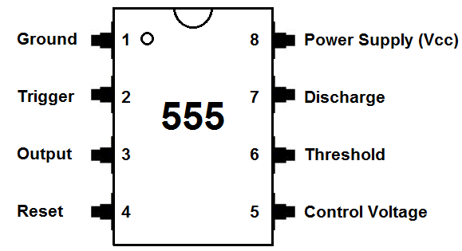
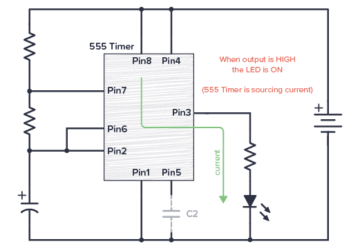
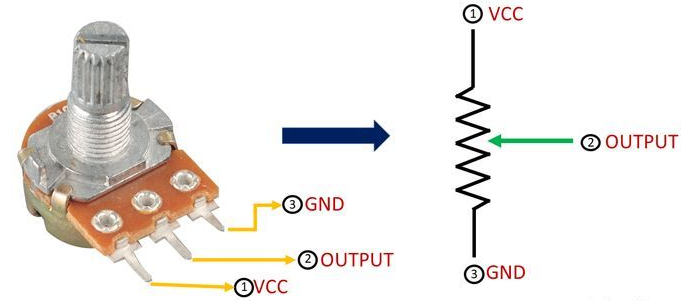
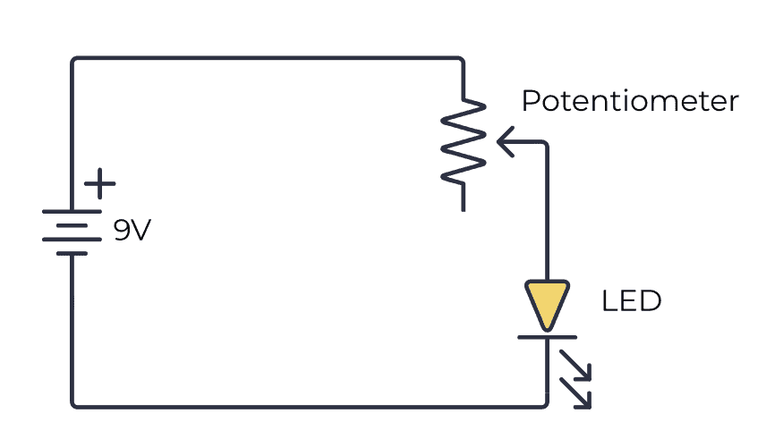
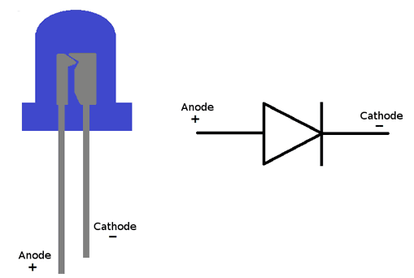
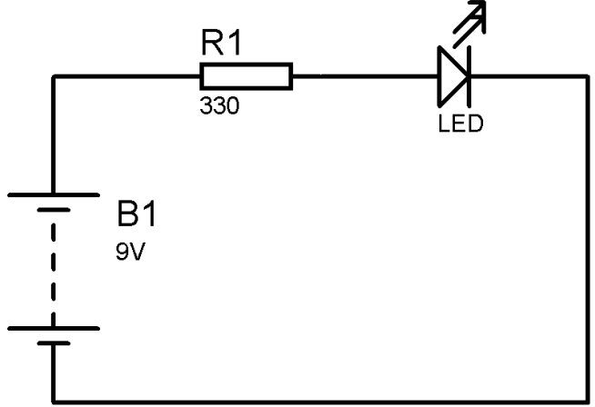
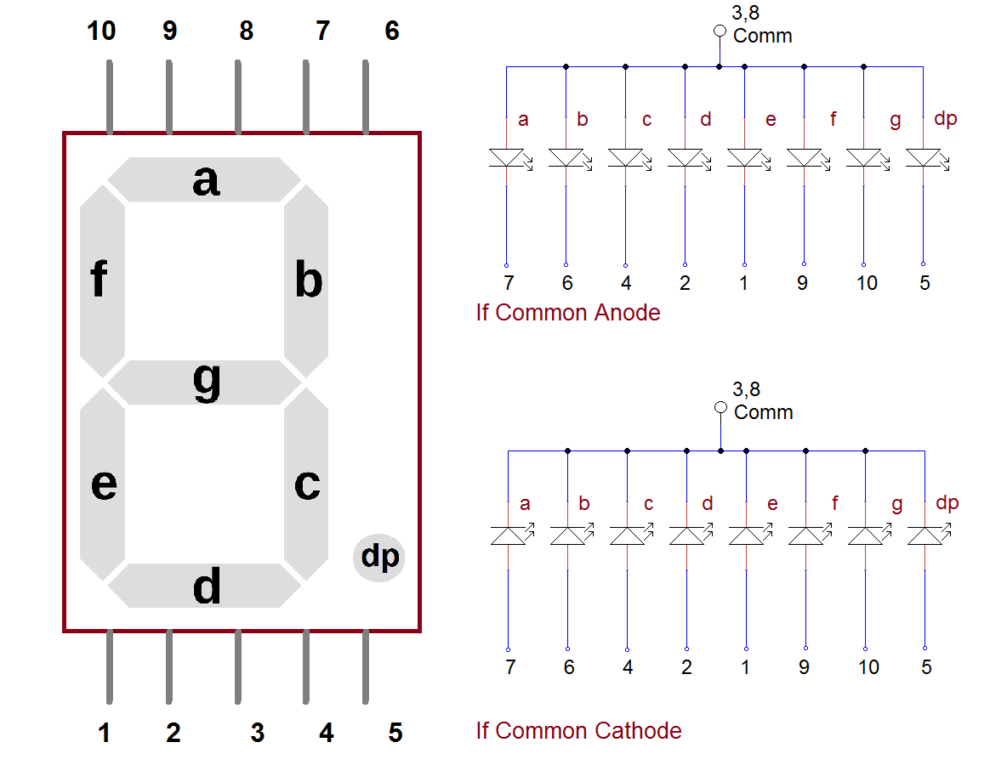
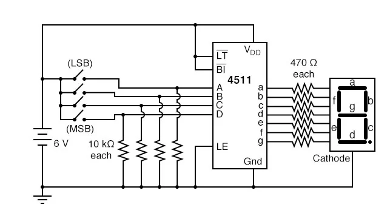

BASIC COMPONENTS
Click a component to jump to its section:
555 TIMER

A versatile IC used for timing, oscillation, and pulse generation. It can be configured in astable, monostable, or bistable modes.

74LS04 (Hex Inverter)

This IC contains six inverter gates. Inverters are used to flip the input logic level, making them essential for digital circuits.

74LS08 (AND Gates)

This IC features four 2-input AND gates, which output true only if both inputs are true.

74LS74 (D Flip-Flops)

This dual D flip-flop IC is useful for storing bits and is a basic building block for sequential circuits.

74LS90 (Decade Counter)

A decade counter IC that counts from 0 to 9, often used in digital clocks and counters.

POTENTIOMETER

A variable resistor used to adjust signal levels or create voltage dividers.

LEDS

Light Emitting Diodes (LEDs) are used for indication and display purposes in circuits.

7-SEGMENT DISPLAY

This display is used to show numerical information and is often paired with a decoder IC.

DIODE (1N4007)

The 1N4007 is a general-purpose diode used for rectification in power supplies and other circuits.